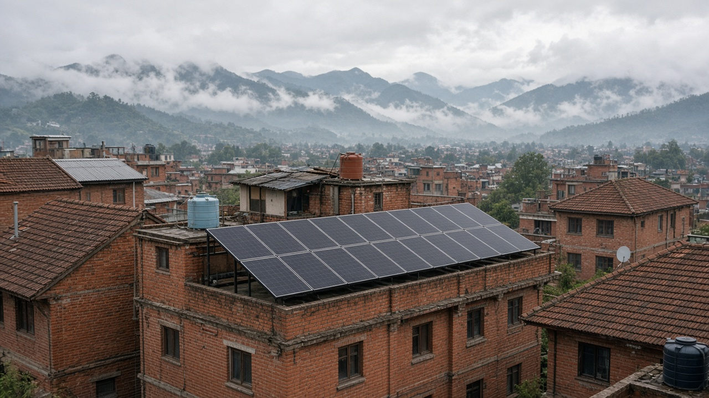
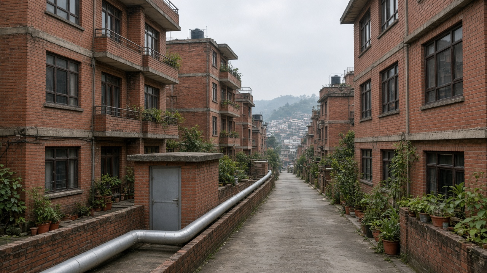

Urban Energy Systems and District Networks
Published on August 20, 2026

Cities are energy systems: buildings, streets, and networks that convert electricity, heat, and fuels into light, cooling, cooking, and movement. District approaches share generation and storage across many plots instead of forcing every household to buy its own generator, heater, or rooftop kit. Combined networks can circulate heat or cool water through neighbourhood pipes, recover waste heat from industry or data rooms, and balance rooftop solar with batteries and flexible loads. Compact mixed-use areas make these networks cheaper because pipes and cables serve more customers per metre. Planning energy with land use—placing high-demand uses near substations and solar-ready roofs—avoids later tearing up streets.
Nepal’s urban energy story is shifting from diesel backup and seasonal hydro stress toward more electrified cooking, vehicles, and cooling. That shift only stays clean if distribution lines, transformers, and demand management keep pace. Microgrids for markets and hospitals can ride through outages, while time-of-use prices and efficient appliances reduce peak strain. District cooling in hot Terai towns and shared solar on apartment roofs in Kathmandu Valley beat hundreds of inefficient split units and isolated inverters. Safety and equity matter: poorly wired informal neighbourhoods face fire risk, and tenants often cannot install systems that only owners control.
Municipalities and utilities should map load growth, reserve corridors for future cables and thermal pipes, and require solar-ready, grid-friendly buildings in new approvals. Public buildings can anchor district loops as first customers. Emerging municipalities still laying streets can bury conduits once rather than repeatedly. Metrics include outage hours, share of renewable electricity used locally, energy use per square metre, and whether low-income wards receive the same reliability as commercial strips. An urban energy system is successful when lights, cooking, and essential services hold during peaks—and when waste heat is treated as a neighbourhood resource, not a nuisance dumped on the street.

शहर ऊर्जा प्रणाली हुन्: भवन, सडक र सञ्जालले बिजुली, ताप र इन्धनलाई प्रकाश, चिसो, पकाइ र आवतजावतमा बदल्छन्। जिल्ला वा छिमेक दृष्टिकोणले उत्पादन र भण्डारण धेरै प्लटमा साझा गर्छ, प्रत्येक घरलाई आफ्नै विद्युत् उत्पादक, तापक वा छाना सामान किन्न बाध्य पार्दैन। संयुक्त सञ्जालले छिमेक पाइपबाट ताप वा चिसो पानी घुमाउन, उद्योग वा डाटा कोठाको फालिएको ताप फर्काउन र छाना सौर्यलाई ब्याट्री तथा लचिलो भारसँग सन्तुलन गर्न सक्छन्। सघन मिश्रित क्षेत्रमा यी सञ्जाल सस्ता हुन्छन् किनकि पाइप र तारले प्रति मिटर बढी ग्राहक सेवा गर्छन्। भूउपयोगसँग ऊर्जा योजना—उच्च मागका प्रयोग सबस्टेशन र सौर्य-तयार छाना नजिक राख्ने—पछि सडक खन्नबाट बचाउँछ।
नेपालको सहरी ऊर्जा कथा डिजेल सहायक आपूर्ति र मौसमी जलविद्युत तनावबाट बढी विद्युतीय पकाइ, सवारी र चिस्याइतिर सर्दै छ। त्यो सर्ने सफा रहन्छ यदि वितरण लाइन, ट्रान्सफर्मर र माग व्यवस्थापन गति मिलाउँछन्। बजार र अस्पतालका लघु ग्रिडले कटौती थेग्न सक्छन् भने समयअनुसार मूल्य र दक्ष उपकरणले शिखर भार घटाउँछन्। तातो तराई सहरमा साझा चिस्याइ र काठमाडौं उपत्यका अपार्टमेन्ट छानामा साझा सौर्य सयौं अदक्ष छुट्टाछुट्टे युनिट र एक्ला विद्युत् परिवर्तकभन्दा राम्रा हुन्छन्। सुरक्षा र न्याय महत्त्वपूर्ण छन्: कमजोर तार भएका अनौपचारिक छिमेकमा आगो जोखिम हुन्छ र भाडावालले मालिकले मात्र नियन्त्रण गर्ने प्रणाली जडान गर्न सक्दैनन्।
नगरपालिका र उपयोगिता निकायले भार वृद्धि नक्सा गर्नुपर्छ, भविष्यका तार र तापीय पाइपका करिडोर आरक्षित गर्नुपर्छ र नयाँ स्वीकृतिमा सौर्य-तयार, ग्रिड-मैत्री भवन अनिवार्य गर्नुपर्छ। सार्वजनिक भवनले जिल्ला लूपको पहिलो ग्राहक बन्न सक्छन्। सडक हालै खन्ने उदाउँदो नगरले नल बारम्बार होइन एक पटक गाड्न सक्छन्। मापमा कटौती घण्टा, स्थानीय नवीकरणीय बिजुली हिस्सा, प्रति वर्गमिटर ऊर्जा र न्यून आय वडाले व्यापारिक पेटीसरह विश्वसनीयता पाउँछन् कि समावेश छन्। सहरी ऊर्जा प्रणाली तब सफल हुन्छ जब शिखरमा बत्ती, पकाइ र अत्यावश्यक सेवा टिक्छन्—र फालिएको ताप सडकमा फ्याँकिएको झन्झट होइन छिमेक स्रोत मानिन्छ।
शहर ऊर्जा प्रणालियाँ हैं: इमारतें, सड़कें और नेटवर्क बिजली, ऊष्मा और ईंधन को प्रकाश, ठंडक, पकाने और आवागमन में बदलते हैं। जिला या मोहल्ला दृष्टिकोण उत्पादन और भंडारण कई प्लॉट पर साझा करता है, हर घर को अपना विद्युत् उत्पादक, तापक या छत सामान खरीदने को मजबूर नहीं करता। संयुक्त नेटवर्क मोहल्ला पाइप से ऊष्मा या ठंडा पानी घुमा सकते हैं, उद्योग या डेटा कमरों की फेंकी ऊष्मा लौटा सकते हैं और छत सौर को बैटरी तथा लचीले भार से संतुलित कर सकते हैं। सघन मिश्रित क्षेत्रों में ये नेटवर्क सस्ते होते हैं क्योंकि पाइप और तार प्रति मीटर अधिक ग्राहक सेवा करते हैं। भू-उपयोग के साथ ऊर्जा योजना—उच्च माँग उपयोग सबस्टेशन और सौर-तैयार छतों के पास रखना—बाद में सड़क खोदने से बचाती है।
नेपाल की शहरी ऊर्जा कहानी डीज़ल सहायक आपूर्ति और मौसमी जलविद्युत तनाव से अधिक विद्युतीय पकाने, वाहन और ठंडक की ओर सरक रही है। वह सरकना तभी साफ़ रहता है जब वितरण लाइनें, ट्रांसफ़ॉर्मर और माँग प्रबंधन गति मिलाएँ। बाज़ार और अस्पतालों के लघु ग्रिड कटौती सह सकते हैं जबकि समय अनुसार मूल्य और दक्ष उपकरण शिखर भार घटाते हैं। गर्म तराई नगरों में साझा ठंडक और काठमांडू घाटी अपार्टमेंट छतों पर साझा सौर सैकड़ों अदक्ष अलग इकाइयों और अकेले विद्युत् परिवर्तक से बेहतर हैं। सुरक्षा और न्याय मायने रखते हैं: कमज़ोर तार वाले अनौपचारिक मोहल्लों में आग जोखिम है और किरायेदार केवल मालिक नियंत्रित प्रणालियाँ नहीं लगा सकते।
नगरपालिकाओं और उपयोगिता निकायों को भार वृद्धि नक्शा करनी चाहिए, भविष्य के तार और ऊष्मीय पाइप के गलियारे आरक्षित करने चाहिए और नई स्वीकृति में सौर-तैयार, ग्रिड-मैत्री इमारतें अनिवार्य करनी चाहिए। सार्वजनिक इमारतें जिला लूप की पहली ग्राहक बन सकती हैं। सड़क अभी खोदते उभरते नगर नली बार-बार नहीं एक बार गाड़ सकते हैं। माप में कटौती घंटे, स्थानीय नवीकरणीय बिजली हिस्सेदारी, प्रति वर्गमीटर ऊर्जा और यह शामिल है कि न्यून आय वार्ड व्यापारिक पेटी जितनी विश्वसनीयता पाते हैं या नहीं। शहरी ऊर्जा प्रणाली तब सफल होती है जब शिखर पर रोशनी, पकाना और आवश्यक सेवाएँ टिकें—और फेंकी ऊष्मा सड़क पर फेंका झंझट नहीं मोहल्ला स्रोत मानी जाए।